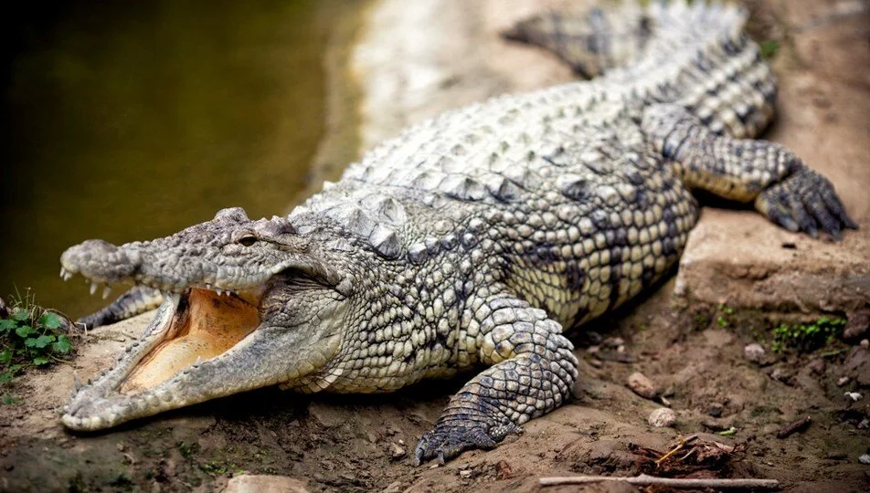
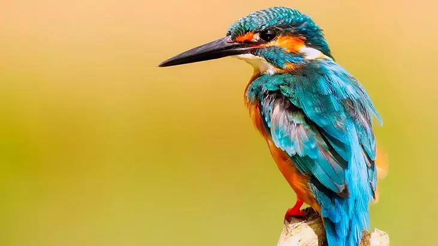

Dünya üzerindeki hayvanlar, büyük bir çeşitliliği kapsar. Karada, suda ve havada yaşayan binlerce tür bulunur. Bu çeşitlilik, ekosistemlerde dengeyi sağlamak için önemlidir. Hayvanlar, insanlar için gıda, ilaç ve ekonomik kaynaklar sağlamanın yanı sıra ekolojik ve kültürel roller üstlenirler. Ancak, yaşam alanlarının kaybı ve diğer tehditler, birçok türün yok olma riskiyle karşı karşıya olduğunu göstermektedir. Bu nedenle, hayvan çeşitliliğini korumak hayati önem taşır.
Memeliler, sıcakkanlı ve omurgalı hayvanlardır. Dünya çapında yaklaşık 5.500 memeli türü bulunmaktadır. Memeliler, genellikle kürkleriyle kaplıdır ve genellikle yavrularını emzirirler.

Sürüngenler, soğukkanlı ve pullu hayvanlardır. Bu grup, timsahlar, yılanlar, kaplumbağalar ve kertenkeleler gibi türleri içerir. Genellikle çoğu sürüngen, dışarıdan bir kaynaktan ısı almadan önce hareket etmekten kaçınırlar.
Kuşlar, tüyleri olan ve genellikle uçabilen omurgalı hayvanlardır. Dünya üzerinde yaklaşık 10.000 kuş türü bulunmaktadır. Kuşlar, farklı boyutlarda ve renklerde gelir ve birçok çeşitli yaşam alanında bulunabilirler.
